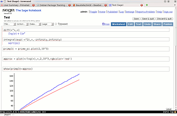
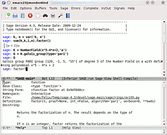

SAGE
Dieser Artikel wurde für die folgenden Ubuntu-Versionen getestet:
Dieser Artikel ist mit keiner aktuell unterstützten Ubuntu-Version getestet! Bitte diesen Artikel testen und das getestet-Tag entsprechend anpassen.
Zum Verständnis dieses Artikels sind folgende Seiten hilfreich:
 SAGE
SAGE  ist ein relativ junges, unter GPL lizenziertes Computer-Algebra-System ähnlich wie MAGMA, Maple, Mathematica und Maxima. SAGE ist in Python entwickelt und versucht, die beste schon vorhandene Open-Source-Mathematik-Software zu einem System zusammenzuführen. Dies resultiert in einem leistungsfähigen System, welches eine Vielzahl von Anwendungsmöglichkeiten unter anderem in Analysis, numerischer Mathematik, Differentialgleichungen, Gruppentheorie, Graphentheorie, Algebra, algebraischer Zahlentheorie sowie algebraischer Geometrie bietet. SAGE integriert als Komponenten unter anderem Maxima, GAP, PARI, Singular, Numpy, Scipy sowie R und bietet Schnittstellen zu u.a. LaTeX, MAGMA, Maple und Mathematica.
ist ein relativ junges, unter GPL lizenziertes Computer-Algebra-System ähnlich wie MAGMA, Maple, Mathematica und Maxima. SAGE ist in Python entwickelt und versucht, die beste schon vorhandene Open-Source-Mathematik-Software zu einem System zusammenzuführen. Dies resultiert in einem leistungsfähigen System, welches eine Vielzahl von Anwendungsmöglichkeiten unter anderem in Analysis, numerischer Mathematik, Differentialgleichungen, Gruppentheorie, Graphentheorie, Algebra, algebraischer Zahlentheorie sowie algebraischer Geometrie bietet. SAGE integriert als Komponenten unter anderem Maxima, GAP, PARI, Singular, Numpy, Scipy sowie R und bietet Schnittstellen zu u.a. LaTeX, MAGMA, Maple und Mathematica.
SAGE besitzt im wesentlichen zwei Bedienoberflächen: Zum einen kann SAGE mittels einer angepassten IPython-Konsole im Terminal gesteuert werden. Zum anderen stellt SAGE ein Ajax-basiertes Webinterface bereit, über welches SAGE ähnlich wie in einem Maple Worksheet bedient werden kann. Zusätzlich kann SAGE durch sage-mode auch mittels des Emacs Editors genutzt werden. Weitere Frontends sind der Editor TeXmacs und die Qt console .
|  |
| SAGE-Notebook |
|  |
| SAGE in Emacs mittels sage-mode |
Installation¶
Auch wenn mit sagemath ein SAGE-Paket in den Paketquellen existierte (ab Ubuntu 10.04 nicht mehr vorhanden), sollte man davon Abstand nehmen, dieses zu verwenden, da es nicht nur stark veraltet, sondern auch fehlerbehaftet ist. Stattdessen sollte man die aktuelle Version von sagemath.org herunterladen. Hierbei hat man die Wahl zwischen vorkompilierten Binärpaketen oder SAGE aus den Quellen selbst zu übersetzen. Entscheidet man sich für letzteres, so sollte man beachten, dass der Übersetzungsvorgang mehrere Stunden in Anspruch nehmen kann.
Vorkompilierte Binärpakete¶
Zunächst muss man folgende Pakete installieren [1]:
gfortran (GNU Fortran 95 compiler)
libssl0.9.8 (universe, ab Ubuntu 11.10 notwendig)
 mit apturl
mit apturl
Paketliste zum Kopieren:
sudo apt-get install gfortran libssl0.9.8
sudo aptitude install gfortran libssl0.9.8
Dann wählt man auf sagemath.org einen geographisch naheliegenden Spiegel-Server aus, folgt dann "Download for Linux", wählt daraufhin Rechner-Architektur und Prozessor aus und lädt nun die zu Ubuntu gehörende Datei herunter. Beispiel: sage-4.5.3-linux-32bit-ubuntu_10.04_lts-i686-Linux.tar.lzma bei einer 32-bit-Architektur.
Nun entpackt [2] man diese Datei in ein beliebiges Verzeichnis. Möchte man SAGE systemweit installieren, so ist etwa /opt/sage ein guter Ort dafür (siehe auch opt). Um dies zu erreichen, öffnet man ein Terminal [3] und wechselt in das Verzeichnis, in welches man die heruntergeladene Datei abgespeichert hat und verschiebt mit Root-Rechten [4] den entpackten SAGE-Ordner nach /opt/sage:
sudo mv sage-?.?.?-* /opt/sage
Mittels
sudo ln -s /opt/sage/sage /usr/local/bin/sage
kann man noch einen symbolischen Verweis setzten, um SAGE von überall ausführen zu können.
PPA¶
Alternativ kann man auch ein "Personal Package Archiv" (PPA) [5] nutzen.
Adresszeile zum Hinzufügen des PPAs:
ppa:aims/sagemath
Hinweis!
Zusätzliche Fremdquellen können das System gefährden.
Ein PPA unterstützt nicht zwangsläufig alle Ubuntu-Versionen. Weitere Informationen sind der  PPA-Beschreibung des Eigentümers/Teams aims zu entnehmen.
PPA-Beschreibung des Eigentümers/Teams aims zu entnehmen.
Damit Pakete aus dem PPA genutzt werden können, müssen die Paketquellen neu eingelesen werden.
Nach dem Aktualisieren der Paketquellen kann folgendes Paket installiert werden:
sagemath-upstream-binary (ppa)
mit apturl
Paketliste zum Kopieren:
sudo apt-get install sagemath-upstream-binary
sudo aptitude install sagemath-upstream-binary
Aus dem Quellcode kompilieren¶
Zunächst muss man folgende Pakete installieren [1]:
build-essential
m4
gfortran
readline-common
libreadline-dev
texlive (optional, aber empfohlen. Siehe TeX Live)
mit apturl
Paketliste zum Kopieren:
sudo apt-get install build-essential m4 gfortran readline-common libreadline-dev texlive
sudo aptitude install build-essential m4 gfortran readline-common libreadline-dev texlive
Nun lädt man sich den Quelltext herunter, indem man auf http://sagemath.org/download-source.html den geographisch nächstgelegenen Spiegel-Server auswählt und von dort die Datei sage-x.y.z.tar speichert. Diese entpackt [2] man in ein beliebiges Verzeichnis. Um nun SAGE zu kompilieren öffnet man Terminal [3] und wechselt in den entpackten sage-x.y.z Ordner. Nun gibt man
make
ein und wartet das Ende des Übersetzungsvorgangs ab. Danach kann man sich mittels
./sage -optional
einen Überblick über die optional verfügbaren Pakete verschaffen und solche mittels
./sage -i paketname
installieren.
Um SAGE systemweit zu installieren, kann man den sage-x.y.z Ordner nach /opt/sage verschieben:
sudo mv sage-x.y.z /opt/sage
und mittels
sudo ln -s /opt/sage/sage /usr/local/bin/sage
einen symbolischen Verweis in /usr/local/bin/ erstellen, um SAGE von überall ausführen zu können.
Deinstallation¶
SAGE kann einfach durch Löschen des SAGE-Verzeichnisses und des symbolischen Verweise gelöscht werden.
SAGE speichert Einstellungen und Notebooks im Verzeichnis ~/.sage/ im Homeverzeichnis. Um eine vollständige Deinstallation zu erreichen, kann man auch noch dieses Löschen. Man sollte sich dies allerdings überlegen, da es in der Regel nicht viel Platz weg nimmt und man bei einer eventuellen späteren Neuinstallation nicht mehr auf die alten Notebooks zugreifen kann.
Aktualisieren¶
Man kann SAGE mittels des Befehls
sudo sage -upgrade
aktualisieren. Hierbei wird allerdings der neueste Quelltext heruntergeladen und übersetzt, es werden keine Binärdateien heruntergeladen! Hat man vorher eine Binärinstallation gemacht und möchte nicht die Übersetzungszeit abwarten, so ist es vielleicht einfacher, SAGE zu deinstallieren (dabei das Verzeichnis ~/.sage/ im Homeverzeichnis nicht löschen) und erneut zu installieren.
Benutzung¶
Programmstart¶
Um SAGE zu starten, öffnet man ein Terminal [1] und führt folgenden Befehl aus:
sage
Nun kann man SAGE von der Kommandozeile bedienen. Möchte man SAGE mittels Webinterface nutzen, so gibt man
notebook()
ein. Beim ersten Start des SAGE-Notebooks muss man ein Passwort für den SAGE Admin Benutzer in der Kommandozeile wählen. Danach sollte der Standardwebbrowser starten und die Seite mit den SAGE-Notebooks öffnen. Alternativ kann man diese Seite auch über die Adresse localhost:8000 bzw. 127.0.0.1:8000 aufrufen.
SAGE-Notebook¶
Auf der SAGE-Notebook Seite meldet man sich nun als Benutzer "admin" mit dem zuvor gewählten Passwort an. Möchte man danach weitere Benutzer hinzufügen, so kann man dies dann unter "Settings" -> "Manage Users" -> "Add User" machen; dies ist aber nicht unbedingt notwendig, wenn man SAGE alleine verwendet.
Durch Klick auf "New Worksheet" kann man dann ein neues Worksheet anlegen, man wird aufgefordert, diesem einen Namen zu geben, über welchen es später wieder identifiziert werden kann. Mit "Save" kann dieses gespeichert werden, mit "Save and Quit" speichert und schließt man es, während man es mit "Discard and Quit" verwirft und schließt.
Nach dem Schließen bekommt man eine Tabelle mit allen Notebooks angezeigt. Klickt man auf den Namen des Notebooks, so kann man dieses weiter bearbeiten. Mittels "Sign Out" kann man sich nach dem Schließen des Notebooks abmelden.
Nachdem man alle seine Notebooks entsprechend gesichert hat, kann man den Notebook Modus innerhalb der SAGE-Konsole mittels der Tastenkombination Strg + C verlassen. Die SAGE-Kommandozeile kann dann mittels des Befehls
quit
verlassen werden.
Hilfe¶
SAGE selbst bietet Hilfe zu den eingebauten Befehlen mittels ?. Um etwa eine Beschreibung des plot-Befehls zu erhalten, gibt man
plot?
ein. Sehr nützlich ist bei der Verwendung der Kommandozeile oder in Emacs auch Tab-Vervollständigung: Gibt man etwa
P
L
Tab ⇆ ein, so erscheint eine Liste aller Befehle, die mit pl beginnen.
Links¶
Auf der SAGE-Website werden noch sehr viel weitere Hilfsmaterialien bereitgestellt. Unter anderem findet sich dort:
ein ausführliches Referenzhandbuch
diverse Tutorials, etwa http://sagemath.org/doc/tutorial/
ein Wiki
Kurzreferenzen
auf 1-2 Seiten zum AusdruckenSage in Debian
- Anlaufstelle für Leute, die helfen wollen Sage in Debian/Ubuntu zu integrieren

Die deutschen Anleitungen sind aber möglicherweise nicht so aktuell und ausführlich wie die englischsprachigen.
- Erstellt mit Inyoka
-
 2004 – 2017 ubuntuusers.de • Einige Rechte vorbehalten
2004 – 2017 ubuntuusers.de • Einige Rechte vorbehalten
Lizenz • Kontakt • Datenschutz • Impressum • Serverstatus -
Serverhousing gespendet von